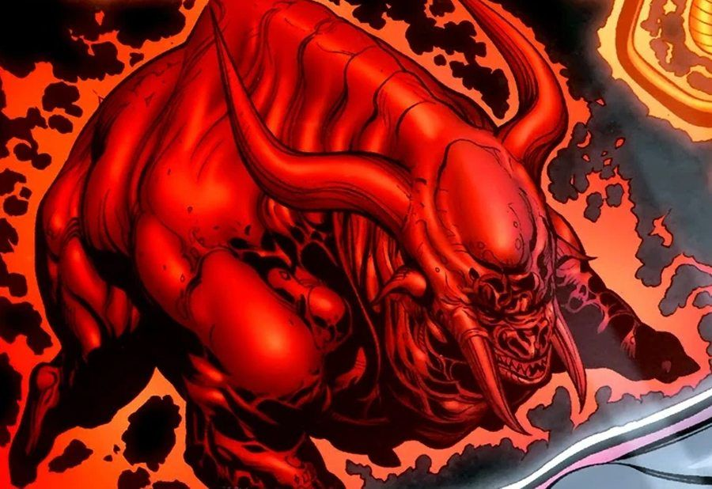

Emotional Entity
The Butcher
The demonic embodiment of rage — born from the first murder.

The story
Rage needed a face, and the universe gave it a demon. The Butcher is a hulking, bull-headed entity born from the first murder ever committed — the moment one living thing took another's life in anger, and the red light answered.
The Butcher does not scheme or whisper. It charges. Whoever it takes as a host is driven into a roaring rampage of vengeance, reason burned away, until nothing remains but the need to destroy. Atrocitus has long sought the Butcher as the true heart of his Corps' fury — the purest expression of everything the Red Lanterns are.
It is the bluntest of the entities, and in some ways the most honest: rage with no pretense, no plan, only the wound.
Known hosts & seekers

Key issues
- Green Lantern #52 (2010) — first appearance
- Blackest Night (2009–10) — the entities unleashed
Entity art: DC Comics — non-commercial fan tribute.